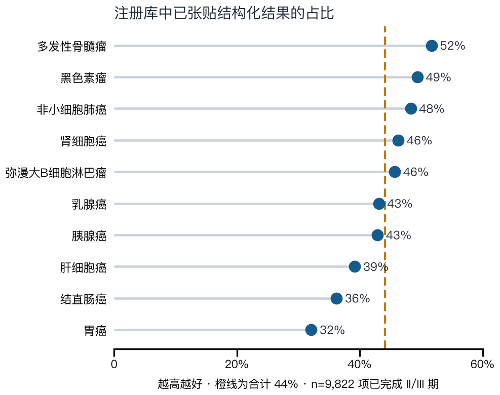

Clinical Translational AI
临床转化医学垂直大模型 —— 不做通用医疗问答，只做申报与决策链路上的硬活
通用医疗大模型在细分语域上知识稀薄且易产生幻觉——根因不在对齐不足，
而在基座语言模型没有这套语域的 token 分布。
我们的做法是：先把领域事实结构化，再谈模型；能力进权重，出处进检索，数据进工具调用。
目前在研两个垂直模型，共用同一套方法论与合规口径，覆盖「药物怎么申报」与「药物能做到多少疗效」 两条临床转化医学上最吃专业知识的链路。
Model 01
细胞与基因治疗转化医学垂直模型
项目网站 · cgt-clinical-llm
Model 02
肿瘤临床疗效预测垂直模型
F-Med 是把 DeepSeek 已验证的 MLA、细粒度 + 共享专家 MoE、MTP、GRPO，按临床数据的性质重新排布的垂直模型。
详细介绍 · 模型优势与评测方案 →
Model 03
医保基金监管与控费垂直模块
规则层直接消费国家医保局「两库」，不自建平行规则体系；大模型只承担规则引擎表达不了的那一层——自然语言支付范围限定 → 自然语言病历的适用判定。
详细介绍 · 控费测算与风控矩阵 →
两个模型共用同一套工程原则，这是复泽智药相对通用模型团队的真正差异。
| 原则 | 为什么这么做 |
|---|---|
| 先 CPT 后 SFT | 监管话术、终点设计、CMC 工艺描述是独立语域，基座缺这套 token 分布； 几千条指令样本改不动模型对它的先验 |
| 分层分离 | 能力进权重、事实进检索、数据库进工具调用。法规与疗效数据每月在变， 写进权重等于固化一个会过期且无法溯源的版本 |
| 复现式硬评测 | 留出真实试验，考入排标准、终点设计与疗效数字的复现，按条目算召回与精确率， 不做主观打分、不做人工偏好评测 |
| 语料全程合规 | 公有领域与 CC0 / CC-BY；排除 CC-BY-SA、全部 NC 与 ND； 不含任何商业模型蒸馏数据 |
公开证据可量化、可复现；私有数据解决公开数据解决不了的问题。
以 Onco Efficacy LLM 的实测为例：对 10 个实体瘤与血液瘤检索「已完成的 II/III 期干预性试验」， 共 9,822 项，其中 4,330 项（44%）已张贴可直接解析的结构化结果。 这决定了公开层能撑起万条量级的试验级疗效记录，也暴露了公开层的边界—— 剩余约 56% 要靠文献与年会摘要抽取补齐。

公开层之外叠加四类私有数据。其中卫健委私有数据库与申办方未公开数据是关键增量—— 阳性结果更易发表，只用公开文献会系统性高估疗效。
不是从零造轮子，而是把 DeepSeek 已验证的组件按临床数据的性质重新排布。
F-Med 是把 DeepSeek 已验证的 MLA、细粒度 + 共享专家 MoE、MTP、GRPO，按临床数据的性质重新排布的垂直模型。
| 组件 | 做了什么 | 临床数据为什么需要它 |
|---|---|---|
| MLA 潜向量注意力 | 把 KV cache 压成低秩潜向量，长上下文的显存瓶颈被解开 | 临床试验方案书、CSR、整册年会摘要都极长——要能一次读完，而不是分段喂 |
| MoE 细粒度 + 共享专家 | 细粒度专家按瘤种、终点类型、法规辖区切分；共享专家承载跨瘤种通用的临床统计与话术 | 临床语域天然分区，但基础临床统计是所有分区共用的，不该让每个专家重学一遍 |
| MTP 多 token 预测 | 多 token 训练目标，并提升结构化抽取吞吐 | 疗效字段强耦合且成对出现：ORR 的分子分母、HR 与其置信区间，逐 token 预测容易拆散 |
| GRPO 组相对策略优化 | 按试验分组算组内相对优势，无需人工偏好标注即可做强化学习 | 疗效预测的奖励客观可验证（ORR 误差、HR 方向对错），且「同一试验多个臂」天然成组 |
每一项都可核验许可证，不留尽调死角。
| 环节 | 选型 | 许可证 |
|---|---|---|
| 基座权重 | DeepSeek-V4 系列（开放权重，1M 上下文） 具体参数规格以 DeepSeek 官方模型卡为准 |
MIT，允许商用与再分发 |
| 基座备选 | Qwen 开放权重分支 | Apache-2.0，含专利授权条款 |
| 工具层协议 | MCP（Model Context Protocol），接入 ClinicalTrials.gov / PubMed/PMC / ChEMBL / openFDA | Anthropic 2024-11 开源；2025-12 捐赠至 Linux Foundation 旗下 Agentic AI Foundation， 规范由 MIT 转 Apache-2.0 |
| 训练顺序 | 领域继续预训练 CPT → 指令微调 SFT → 事实库检索增强 | 全程不使用商业模型蒸馏数据 |
写在正面而不是脚注里：
扫码访问本页，或直接打开：
zhu-algorithm.github.io/fuze-zhiyao
代码、schema 与数据仓库为私有，需申请访问权限。推理端点为口令内测。